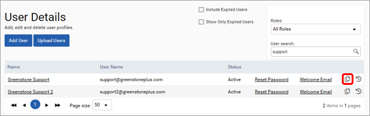

Users can be created and managed in the user details section. To create a user select the Add User button. In the first tab, provide the name, email and additional information for the user. The pages the user can access can be set in the User Roles tab. These are outlined below:
| Group | User Role | Definition |
| Admin | Admin Overall | Administrator Access for all modules including the general section |
| Admin Frameworks | Administrator access for the Frameworks module | |
| Admin Environment | Administrator access for the Environment module | |
| Admin General | Administrator access for general settings e.g. users, nodes, data sources and views | |
| Environment | Environment Dashboards | Access to the Environment analysis dashboards |
| Environment Management | Access to the Risks & Opportunities, Offsets Monitoring and Energy Compliance sections. | |
| Environment Approver Level 1 | Environment module 1st approver access. | |
| Environment Approver Level 2 | Environment module 2nd approver access. | |
| Environment Initiatives Dashboard | Access to the Environment Initiatives Dashboards | |
| Environment Initiatives Inputs | Access to add or view environment initiatives inputs | |
| Environment Reports | Access to view or run environment data reports | |
| Environment Targets | Access to add, view and track environment targets | |
| Environment Variance User | Access to respond to classification requests within the variance tracker | |
| Environment Variance Admin | Access to request classifications from other users, respond to classification requests and approve classifications | |
| Environment Variance Super Admin | Access to sign off all approvals and classifications | |
| Frameworks | Frameworks Dashboards | Access to the frameworks dashboards |
| Frameworks Approver Level 1 | Frameworks module 1st approver access | |
| Frameworks Approver Level 2 | Frameworks module 2nd approver access | |
| Frameworks Approver Level 3 | Frameworks module 3rd approver access | |
| Frameworks Inputs | Access to add or view frameworks inputs data | |
| Frameworks Reports | Access to frameworks data monitoring reports | |
| Frameworks Supervisor | Read and write access to all frameworks questionnaires and the ability to edit approved responses which are otherwise locked | |
| Frameworks Auditor | Read and access to all Frameworks questionnaires | |
| Utilities | Utilities | Access Utilities tools e.g. normalisation data, general reports and the document store |
Finally, users can be assigned to user groups. As detailed below, user groups can be provided with read, write and sign off access to each view. A user can be part of one or many user groups.
Two functionalities exist to improve the efficiency of user creation. The copy button, highlighted in the screenshot below, can be used to copy the permissions of an existing user to a new user. Alternatively, new users can be uploaded in bulk by filling in the associated template and selecting Upload Users.
The Welcome Email button can be used to send a welcome email to a user. This email will instruct the user how to sign in to the platform for the first time. Similarly, the Reset Password button can be used to reset the password of a user who may have forgotten their details.
